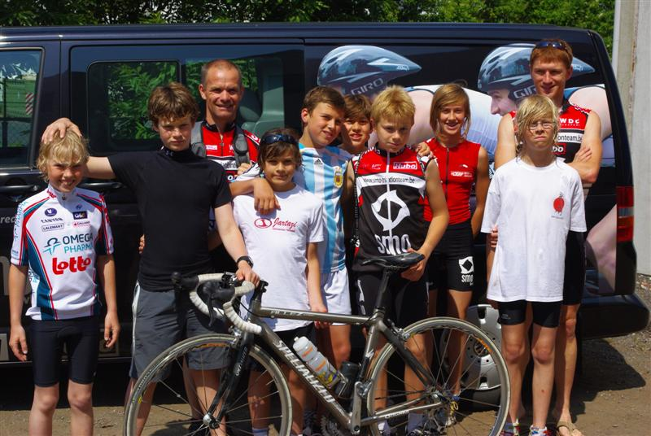

Het laatste weekend van juni vond de laatste training plaats van de initiatiereeks jeugdtriatlon – afdeling Maldegem. Er stond een koppeltraining op het programma voor onze jeugdatleten aan de gebouwen van onze hoofdsponsor SMO bvba. Het parcours van de kwarttriatlon Eeklo werd verkend. Na een frisse duik in het water van de Eeklose jachthaven, kon iedereen smullen van overheerlijke pannekoeken aangeboden door Moesch (mama van Sander en Bas Dobbelaere en uitbaatster van het Moeschtuintje in Watervliet).
Vanaf zaterdag 14 augustus worden de wekelijkse trainingen hervat, maar de komende weken zullen onze ironkids zeker niet stilzitten. Er staan nog enkele jeugdwedstrijden en workshops op het programma. De foto’s van de laatste jeugdtraining en van triatlon Eeklo (met dank aan Stephane Staelens) staan in het fotoalbum. Verdere info betreffende deze activiteiten verlopen via de jeugdtrainers. Bedankt aan Moesch en de jeugdtrainers voor dit geslaagde initiatief!